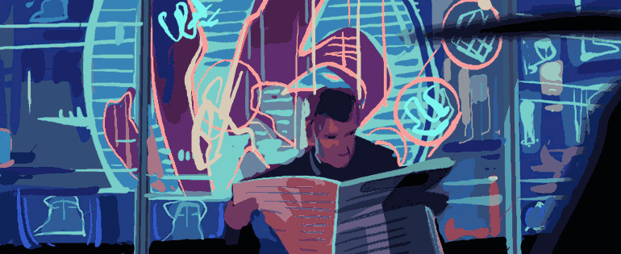

Film Analysis
This film deserves a higher status than that of cult, and is much more than just an acceptable homage to Philip K Dick, author of many original science-fiction novels, often laced with philosophical perspectives on reality and human dependencies. The film is multi-layered; thrilling and unsettling, part dark science fiction and detective film noir, realistic and dream-like, intelligent, mature, artistic and powerful. Purely on the surface, it has a visual richness which is wonderfully atmospheric (enhanced by the soundtrack of Vangelis), drawing one into a dystopic vision of the future which is not only a sprawling, technological metropolis, but an empty, soulless place. It is a film which not only incorporates the strong themes presented by Dick (disillusionment and control) but also adds its own sorbefacient mood, which though aloof and tragic includes through its characters a sense of life's contained desperation. They are withdrawn, living in a mellow dream but primarily lonesome and in need of basic human love or compassion. The indication that many people have left Earth for the (deluded?) attraction of a utopian, resort-style Off-World colony increases the sense of their world as forgotten and abandoned. The characters seem random, everyday people of the city, but through the story are united by an accepting will to survive because there is nothing else, nothing but fear. Death to the replicants is represented by their own heightened sense of mortality and the outside embodiment of the Blade Runners; stalkers such as the weary Deckard.
Throughout the film, life and death are displayed in ways that illuminate their surrealness; life in the case of a radically imposing world - large, expansive, beautifully decadent, grown strange even to the hero Deckard - and death, especially in the example of Zorra's death sequence, as a sprawling, slow-motion operatic and disjointed event. Survival is a weary task amongst such decadence, but it is a prominent theme; the replicants are not human yet they want life, Deckard scrambles extensively on the rooftops and at one classic point, is moments from certain death. The film itself is called 'Blade Runner' suggestive of the confrontation with danger that hunting replicants for a living invites. 'Quite a thing to live in fear isn't it?' Towards the climax the film attempts to bring the viewers as close to the ledge of death as possible. '4,5 - how to stay alive' shouts Batty chasing Deckard with a nail plunged through his hand, an attempt to retain his failing sense of sensation by an infliction of harsh pain. This is all artistic nerve touching, and with the roles reversed to Deckard as the prey, the viewer senses the hopelessness of Deckard's situation.
This highlights another interesting factor which distinguishes Blade Runner from being a conventional sci-fi thriller to a surprisingly relevant and resonant work; the mix of the traditional with the untraditional. We have the typical cop hero in the character Deckard, found in a downtown bar at the beginning, wanted for an assignment by the chief. The role of film noir is interesting in that such stereotypical characteristics are drawn upon and then overturned so that out of cliche emerges a great originality of vision - the future is not just visually dark and pessimistic but also fundamentally old in a spiritual and physical way. There is the usual love interest in Rachel, the main villain Batty and his boys heading for a showdown, a few minor characters of interest and behind it, the clever scientist whose plans backfire. Before long however, all is out of joint; the baddies are not evil, but confused creatures of Frankenstein seeking like us all, extended life and answers for the pain and suffering caused by grief and heightened doses of emotion. Rachel, one of them also, complicates Deckard's task and in general there is a sense of confusion, horror in Zorra's realistic death scene and complexity in man's modern creations and lack of control. Technology, it seems has surpassed our ability to control and relate to it. This futuristic city is forlorn, lonely and lost. The characters are world-weary; they have seen and done it all, and are none the wiser. Rutger Hauer devised Batty's death speech - a touching scramble for poetic words to distill the moment's emotional(?) complexity - and he shines as one of the most three-dimensional film enemies ever. Instead of a great showdown with this enemy where the viewer witnesses good triumph over evil, we have a prolonged, desperate fight. Our everyman hero is disarmed, forced to flee and is saved by the enemy who is dying anyway. It is a scene where we wait to see if Deckard will survive and return to salvage all that he now cares about - his strange love for Rachel. After this case, we may discern that Deckard 'won't work in this town again'.
It has been suggested that the film suffers from an identity crisis through not knowing whether it is a science fiction thriller or a clever detective film noir. This was never the case. Like in the book, Deckard in the director's cut is a conventional cop confronted by an unconventional case (Nexus Six replicants with memories and primitive emotions) which will bring him close to confronting a hazard that is inherent within us all; the darker more horrific desire for holding onto life. For this is the struggle of Batty and the replicants - how to live with dangerously acute powers and sensibilities bestowed by people such as the arrogant scientist Dr. Tyrell. They are not happy with their gift; playing second-rate to humans, living in fear of death, and by the end, suffering a painful, protracted and useless end. Their inability to comprehend their own mortality and loss of experiences ('like tears in rain') mirrors our own. This is the result of arrogant science, of playing Prometheus, and as a powerful theme resonates to the consideration that human life is not dissimilar. It is true perhaps that this fundamental idea of 'what it means to be human' may come over better in the book than in the film; a stronger depth inherent in the film is that of hunter and hunted. But what we do witness is Deckard's natural but ironic predicament of falling for the enemy, i.e. Rachel. This is perhaps the only goodness in a film illustrating the fallibility of humanity; love and the need to be loved. It is here where we get the dream image of the charging unicorn, a symbol perhaps of an attainable goodness and simplicity amid such dark modernity and angst. Deckard doesn't find an enemy as such in the replicants, but beings every bit as fallible as himself; confused, fearful and understandably dangerous when threatened. A more apparent interpretation of the unicorn is that it is a memory implant given to Deckard - himself a replicant, confirmed at the end when he notices the silver origami creation of the cane-man Gaff (a real Blade Runner?) Have they used Deckard as a thief to catch the thieves? Gaff shouts to a slumped Deckard 'You've done a man's job sir....' Is Deckard a man and has he done the world a favour? At the beginning he was just an everyman in a fast-food chinese, but by the end doubt about reality and his relation to it has emerged and been confronted (a typical Dickian theme). Personally, although this is a strong connection, I prefer to think that there is still room for suggestion here, that the dream unicorn may also be a real dream, but perhaps attaches to a deeper meaning shared between the Blade Runners. This however is the cleverness of the subtle ambiguity in the film; that it works on these levels.
There are other groundings for understanding Deckard as a replicant, with his unemotional dedication to completing the task set for him by the chief. The reaches of Tyrell's influence on the positions of the city are uncertain. Possibly it is all one engineered experiment by the god-like mental Tyrell; introducing Rachel to Deckard, their relationship, Holden's incapacitation at the beginning by Leon, and the need for a being able to match and destroy Batty. But this is relatively inconsequential and merely adds strength to the theme of presenting the experience of humanity - its strange needs and compulsions - through the concept of replicants. The fact that the reference to their murder is classified 'retirement' draws attention to an unjust but deliberate discrimination. What these cops are tracking down in the Nexus Six replicants are mirrors of themselves, suffering from a lack of empathy. The film is laced with a subtle, ironic perspective.
By the time Deckard enters Sebastian's building it becomes apparent that Deckard from this point will hardly be likely to just kill Batty and walk home to Rachel. We are not at all sure that Batty should be 'retired' - indeed nor any of them. The climax distils the running of the blade for both characters and for all people. Ultimately, as Rachel and Deckard rush to escape the vicinity of other Blade Runners, but of still inevitable death, their weakness and futility matches Batty's. But they have a sort of love, one that possibly only Deckard feels, and we guess that they will cling to this as they enter the lift and the difficult future. The door slams, life goes on; the players have left the stage. They are left threatened, for possibly the cane-man Gaff will ensure that Rachel is hunted down. 'It's too bad she won't live! But then again, who does?' This statement could also be a hint to Deckard that he must leave and take Rachel away - but if they are both replicants then their lives will be half-lives in any case.
Blade Runner is an artfully crafted set-piece in that it displays the dispassion that is its primary theme, although it can really do no more on an emotional level. The interest of the replicants are as a device for depicting a negative condition where communication is lacking and individualism is strong; an inability to express the weight of our tragedy. The replicants group awkwardly together in the shadow of the oppression that is death. Empathy it would seem is what makes us human; our ability to feel for others. Deckard is not sufficiently possessed of this until he is taken to hand at the end by (ironically) Batty.
The definitive version of the film is the director's cut, which retains the proper level of ambiguity by subtracting the ill-fitting, unnecessary happy ending. Instead we may wonder whether the unicorn of hope, love and purity (my interpretation) can live, or deserve to live, outside the dream and inside such an exhausted, dead-end of a world. This film is serious; both far-fetched and realistic, bleak in setting but finally unresolved, hopeful even, striking a powerful chord with its searching, struggling characters. Crucial aspects of the human condition are here on display in surely what is a fine creation.
This essay does not include the vast religious parallels that can be read into the characters and their actions eg. the replicants as fallen angels returning to Earth to confront their maker, Batty as a symbol of mankind, Deckard as God's agent of death and Sebastian as an intermediary Jesus Christ. (Read Jean-Paul Gossman article 'A Postmodernist View')
Written by Adrian McOran-Campbell